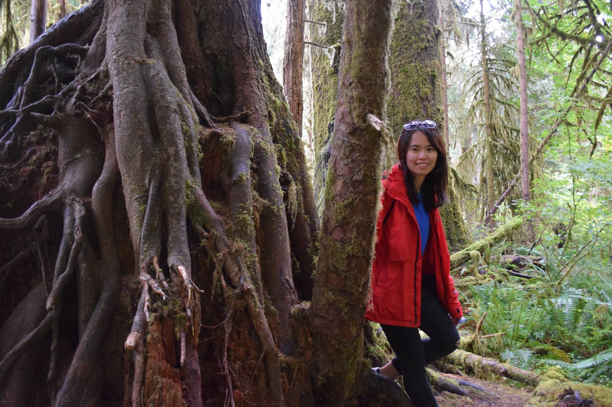

Hi, my name is Uyen Nguyen. I am currently finishing up my PhD in Geosciences at Penn State University.
I have spent the past few years researching alternative ways to get green energy and clean up oil spill by utilizing bacteria that can eat messy organic matter.
I am very excited to use big data to solve complex problems and drive business decisions.
When I am not doing science, I really enjoy outdoor activities and exploring nature.
Feel free to reach me @ unguyen.psu.edu@gmail.com
